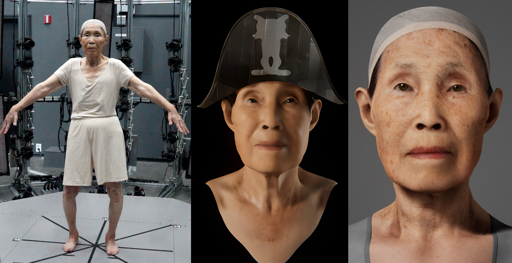
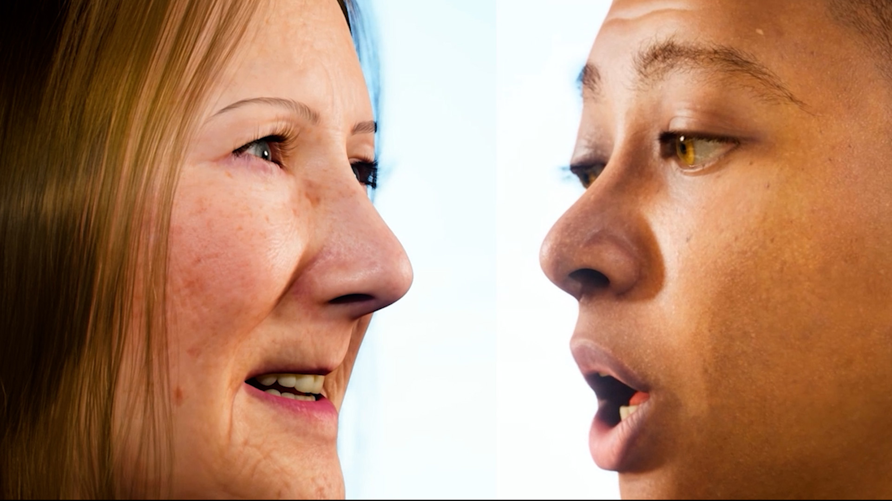
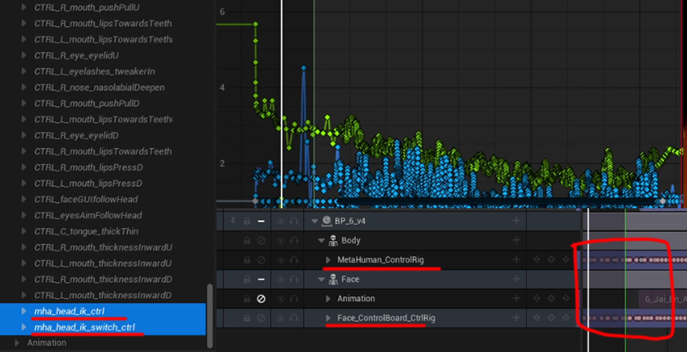

01 / Selected production cases
Proof of work, not just finished renders.
Each case identifies the animation or character problem, my technical contribution, the handoff boundary, and the existing video or process evidence.

01 · Flagship / UE5 · MetaHuman / performance pipeline
Built an identity-preserving workflow from delivered volumetric scan to production MetaHuman. Cleaned body performance using Maya and MotionBuilder, combined separately acquired facial data, retargeted into Unreal, and extended the character for a VR stage.
Maya + WrapOptiTrackHumanIKMetaHumanUnreal Sequencer

02 · Ten-character scale / UE5
Created and validated ten MetaHuman characters across identity, facial performance, timing, scene staging and review. Standardized repeatable checks and repaired character-level integration issues across a multi-person sequence.
10 identitiesControl RigFacial animationMulti-character QA

03 · New technical prototype / C++ tests / UE5 source
Built a deterministic locomotion decision model with speed hysteresis and host-compiled regression tests, plus a native Unreal UAnimInstance source bridge and animator-facing preflight tool. UE5 Editor compilation and actual retargeted performance are tracked as pending.
C++ core · verifiedUAnimInstance · source5 audit testsUE5 validation pending
04 · Motion integration / Unreal + Houdini
Aligned independently acquired body and face animation for three performers, validated deformation in Unreal and prepared animated full-body Alembic output for downstream Houdini cloth work.
MOVIN TRACINRokoko / iPhoneAnimation syncAlembic

05 · Custom character / facial rig + real-time delivery
Built a custom historical character with production topology, facial deformation, ARKit-style capture mapping, hair and cloth, then integrated the performed character into a public-facing Unity HDRP installation.
MayaFacial blendshapesPythonUnity HDRP
06 · Systems & maintainability / Technical lab
Reproducible asset checks, independent unit tests and full UE5 setup and acceptance criteria. The runtime bridge has its own code-focused case above.
Preflight QATest casesState machine planHandoff checklist